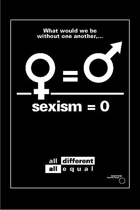
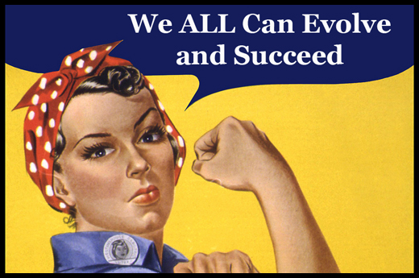

What is Sexism?
Sexism or gender discrimination is prejudice or discrimination based on a person's sex or gender.Sexist attitudes may stem from traditional
stereotypes of gender roles, and may include the belief that a person of one sex is intrinsically superior to a person of the other.A
job applicant may face discriminatory hiring practices, or (if hired) receive unequal compensation or treatment compared to that of their opposite-sex peers.
Extreme sexism may foster sexual harassment, rape and other forms of sexual violence.

What are the consequences of sexism at work?
FOR THE VICTIM
- Sexism creates a hostile work environment. Victims are treated like objects instead of being considered for their knowledge and competence.
This situation is especially hard to overcome when co-workers in large numbers encourage sexist attitudes in one another and management does not
seem inclined to step in. The victim is slowly made to believe that he or she is inferior in regards to members of the opposite sex.The victim
can suffer distress with physiological (hypertension, ulcers, eczema, aches and pains) and psychological (nervousness, insomnia, fatigue) effects
as well as loss of personal identity and self-esteem at work and in life in general.Sexism may also cause financial distress when a victim is
denied access to promotions or advancement. Finally, a victim may suffer from depression that could force him or her to stop working and
eventually be unable to return altogether.
FOR WITNESSES INSIDE THE ORGANIZATION
- Sexism can be an integral part of the organization's corporate culture. In this case, witnesses are unlikely to protest and stand against
the opinion of the majority. Their silence results in reinforcing and encouraging their co-workers discriminatory behaviour.
FOR THE ORGANIZATION
- Sexism arbitrarily deprives an organization of a vital resource: the competence and knowledge of its female staff. Where sexism exists, it
most likely developed inside the corporate culture and eventually became a corporate value. Once sexism is exposed, a profound corporate
reassessment will have to take place. This will require a change of mentality with repercussions on the organizational structure. The change
will take time and will need to be planned carefully.
